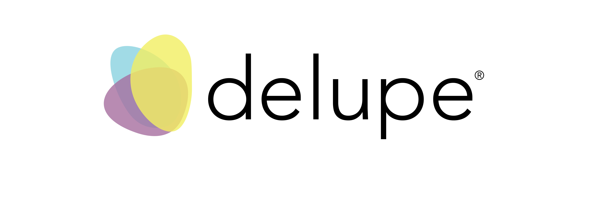
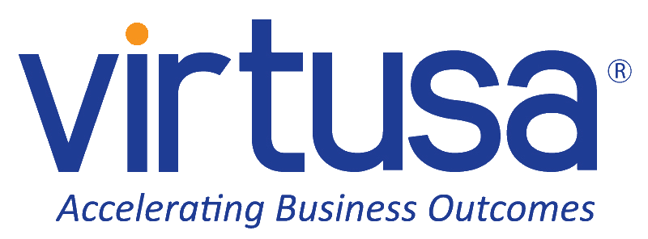

Engineer
Hands-on architecture, implementation, and production reliability.
Engineering leadership · Platform architecture · Information security
Gayan Shanaka Thejawansha · Lead Software Engineer & Information Security Manager
An engineer at heart and hands-on technical leader connecting platform architecture, reliable delivery, and ISO 27001-aligned security.
Hands-on architecture, implementation, and production reliability.
Direction, mentoring, delivery systems, and accountable execution.
Risk-led governance translated into enforceable technical controls.
Experience
A progression across backend engineering, platform architecture, operational reliability, and information-security leadership.

Oct 2025 – Present
Owns the strategic development and operation of the information-security management system alongside a continuing engineering-leadership remit, including the identification and remediation of 17+ critical infrastructure risks.
Feb 2023 – Present
Leads architecture and delivery for commerce and ad-tech services, increasing merchant catalogue ingestion throughput 5x and reducing feed-processing latency 70% across onboarding, reporting, and partner integrations.
Jun 2021 – Nov 2022
Provided architecture, integration, middleware, security, and application-roadmap leadership for charging-related platforms.
Apr 2019 – Jun 2021
Delivered backend services, integrations, and modernization work for telecom charging and prepaid platforms.

Nov 2017 – Mar 2018
Worked with an R&D team on internal governance-platform interfaces, Java processes, automation, and data changes.
Capabilities
Capabilities are grouped by work delivered—not subjective percentage bars.
System design, technical roadmaps, delivery planning, code review, mentoring, cross-functional alignment, and reliability.
Hands-on development of integrations, services, processing pipelines, and reporting systems.
Containerized delivery, Linux operations, automation, performance tuning, and production support.
Risk-led security management that connects governance requirements to enforceable technical controls.
Engineering impact
Representative outcomes from hands-on engineering, technical leadership, platform modernization, and security management.
Commerce & ad-tech
Charging & integration
Information security
Technical leadership
Project archive
About
I work where software architecture, operational reliability, and information security meet. My background spans telecom charging systems, high-volume merchant data and reporting platforms, API integrations, containerized infrastructure, and security-management systems.
An engineer at heart, I stay close to implementation while leading technical direction: shaping architecture, reviewing code, improving delivery systems, mentoring engineers, translating risk into practical controls, and partnering with product and business stakeholders.
Credentials
Verified education and a single combined management-systems auditor credential.
Professional credential
T-CERT SYSTEM Academy
ISO 9001:2015 and ISO/IEC 27001:2022 according to ISO 19011:2018 · Apr 2026 · TC-0063-26MK-0657
View credentialNov 2014 – Feb 2019
Computer Engineering
University of Peradeniya · Sri Lanka
University websiteContact
Open to thoughtful conversations around technical leadership, platform engineering, and information security.
Dubai, United Arab Emirates